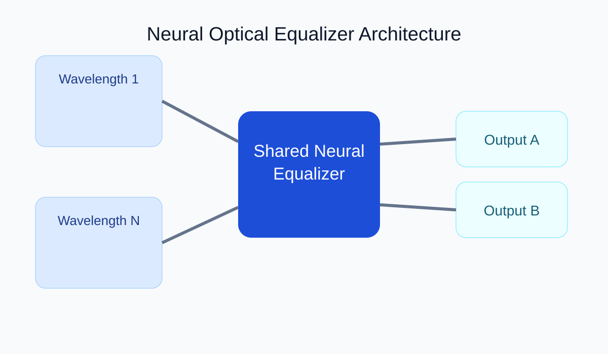
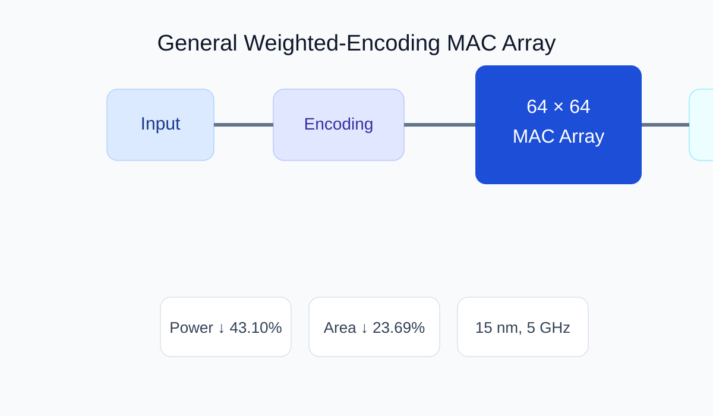

Projects
This page now includes project-image slots and repository-link slots. The current visuals are schematic placeholders that I created based on your research topics; once you provide real figures, I can replace and refine them directly.
This page now includes project-image slots and repository-link slots. The current visuals are schematic placeholders that I created based on your research topics; once you provide real figures, I can replace and refine them directly.

Ph.D. Research · Jun 2021 – Dec 2022

Ph.D. Research · Jan 2023 – Nov 2024